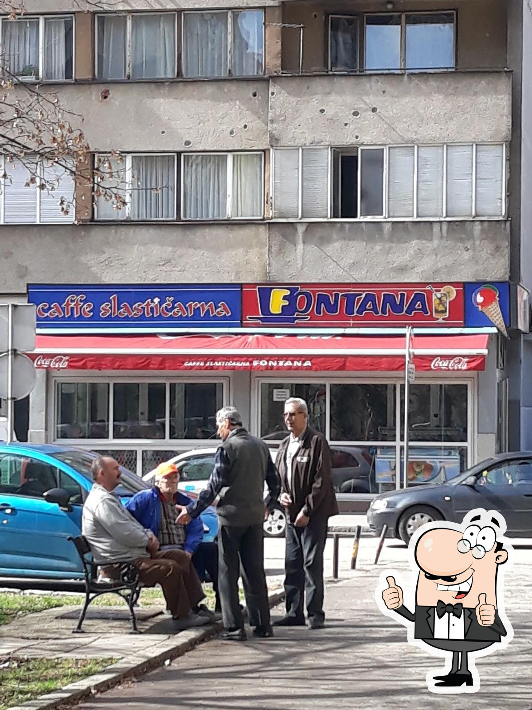

Poslastičarnica Fontana je idealno mjesto za sve koji žele uživati u raznovrsnim desertima i opuštenom ambijentu. Od svježih kolača do ukusnih sladoleda, svaki zalogaj donosi pravo osvježenje. Savršena je za druženja, proslave ili jednostavno uživanje u slatkim trenucima.